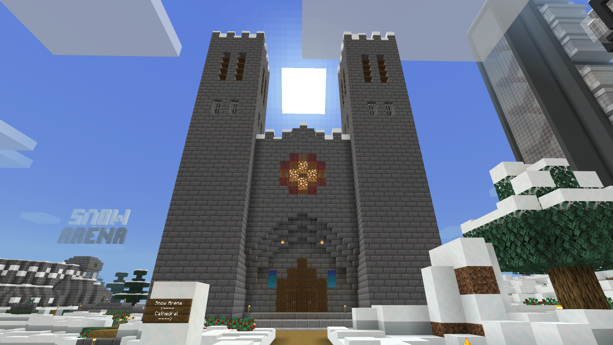
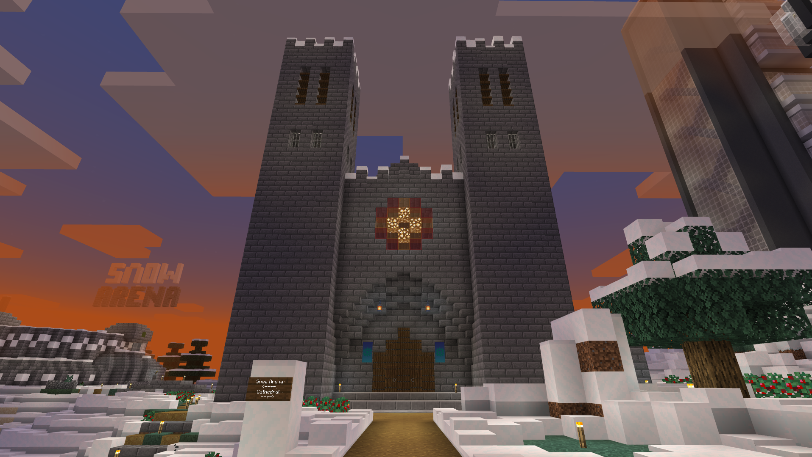
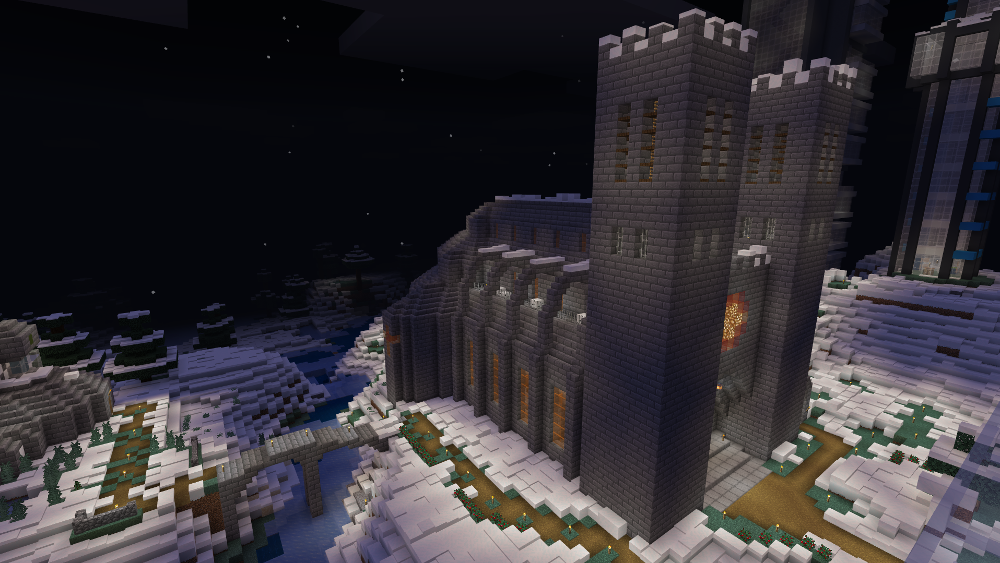
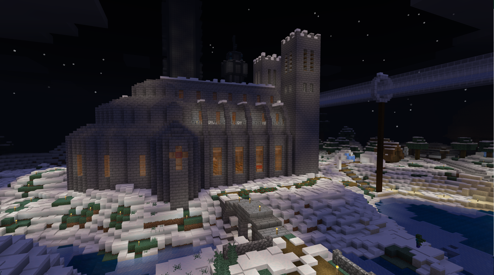
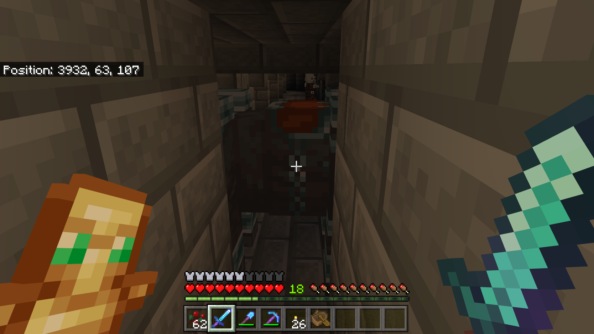

Build projects - Cathedral

The cathedral was one of the first larger projects I did on the realm. To make it I looked at a previous build I made and scaled it to be the right size for the area. To make sure that the cathedral would turn out nice I build it entirely in creative before building it on the realm. This allowed me to test and try out lots of different details without it being a pain to create and remove. The undercroft of the cathedral is quite dark and sometimes a zombie is even heard. So watch out for the walking dead if you dare to enter the undercroft.
The cathedral is located in the spawn area at ().
    